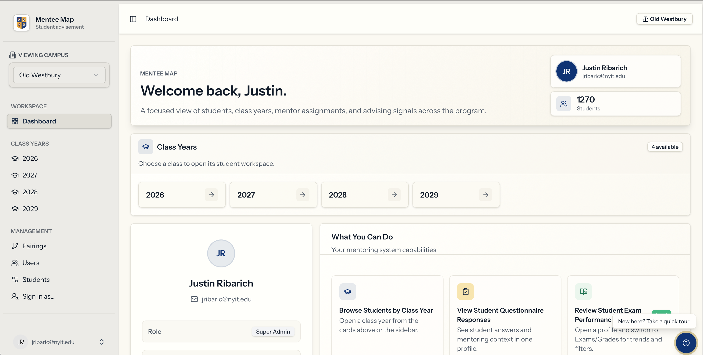

Featured project
Mentee Map
A faculty-facing web application for monitoring mentee goals, survey insights, academic progress, and exam performance in one searchable workspace.
- Designed dashboard views that help mentors spot trends and risks quickly.
- Built filtering and search workflows for exam score exploration.
- Integrated REDCap data with a Laravel, React, MySQL, Redis, and Docker stack.